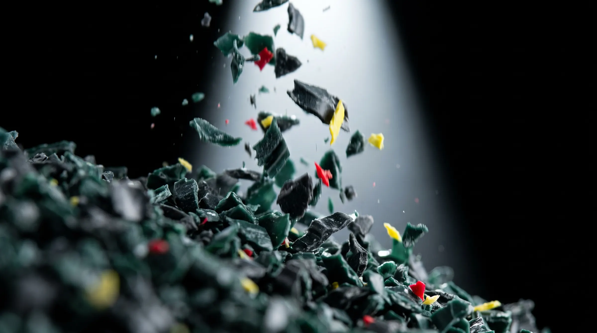
Eco Plastics
The plastics line
Rigid plastics from NSW, Victoria, the ACT and South Australia, stripped, shredded and washed into clean flake in Geelong. Pallet wrap is baled for film recyclers.
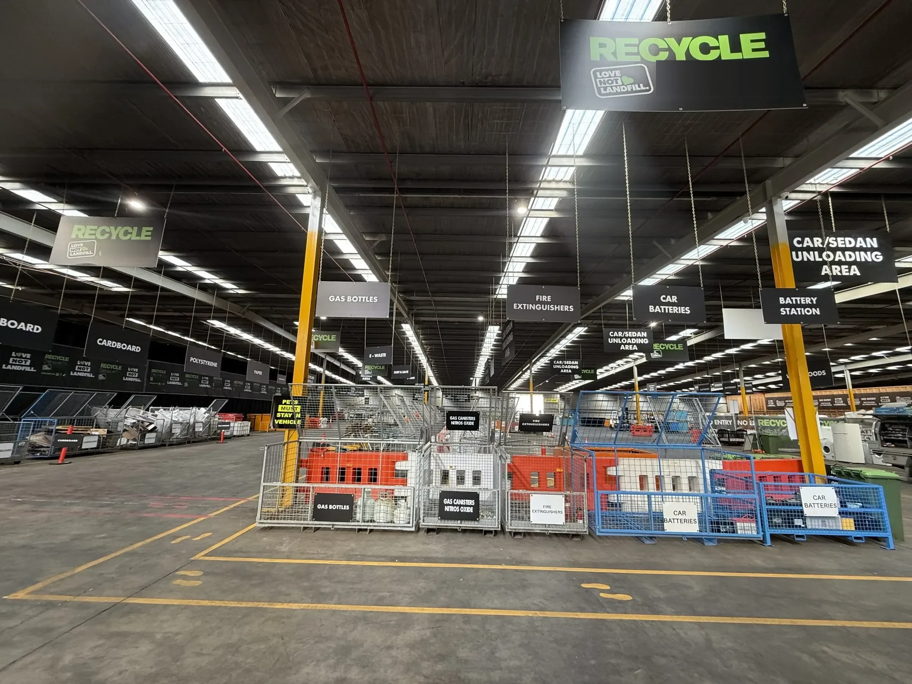
04/Our site
Our Geelong site. Undercover, six days a week, 90+ streams separated on site, and home to the Eco Plastics line.
Scroll04 The site
A resource recovery centre designed and purpose-built for landfill diversion.
90+
Streams separated on site6
Days a week, undercover3
ISO-certified systems: 9001, 14001, 45001R000312600
EPA Victoria registration| EPA Victoria R000312600 | Registered with EPA Victoria |
|---|---|
| ISO 9001:2015 | Quality management |
| ISO 14001:2015 | Environmental management |
| ISO 45001:2018 | Occupational health and safety management |
| AS/NZS 5377 | Collection, storage, transport and treatment of end-of-life electrical and electronic equipment |
| NIST 800-88 | Media sanitisation (data destruction) |
04 The site, in photographs
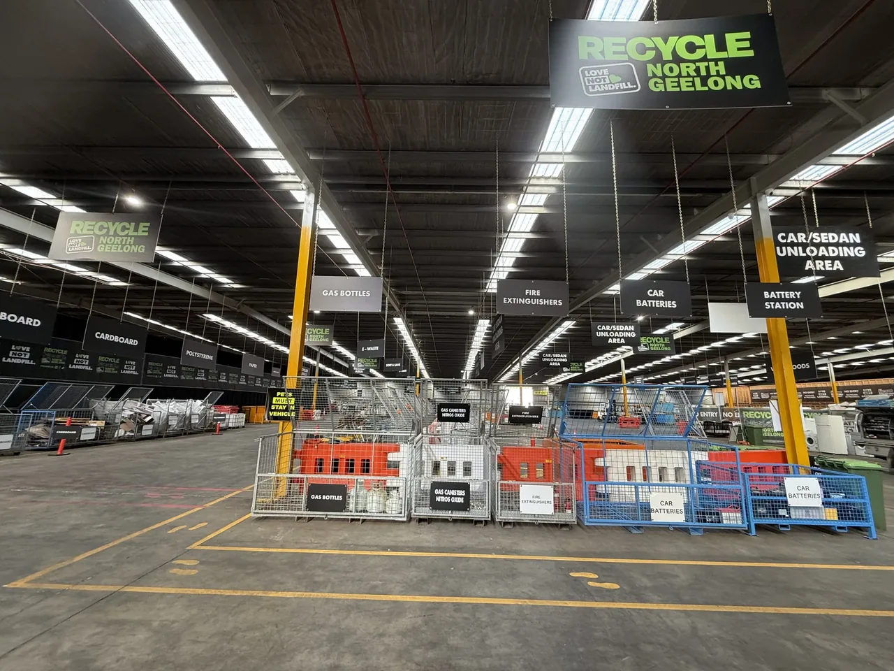
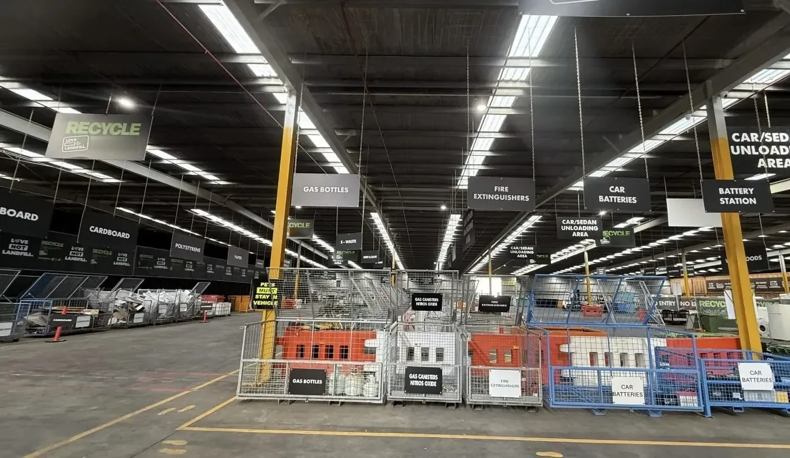
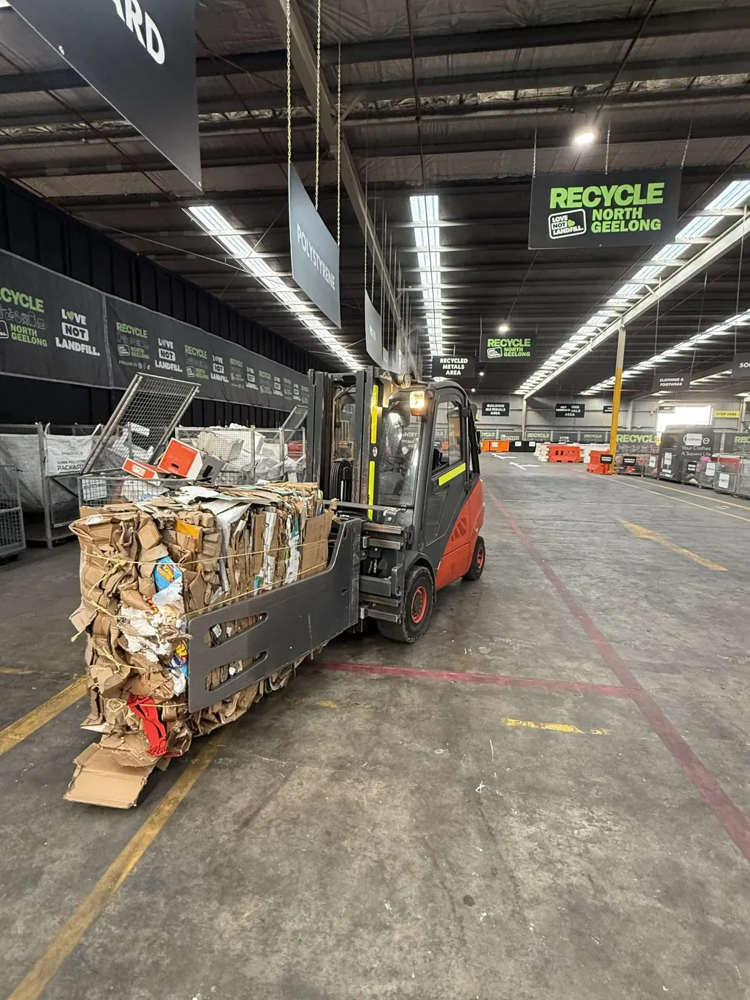
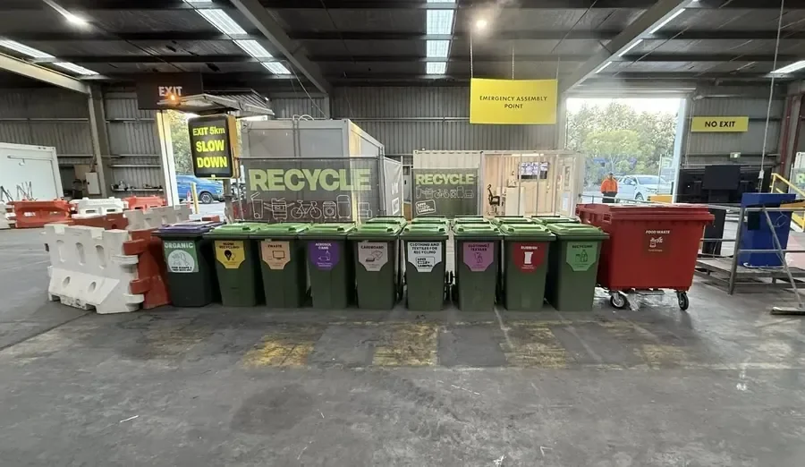
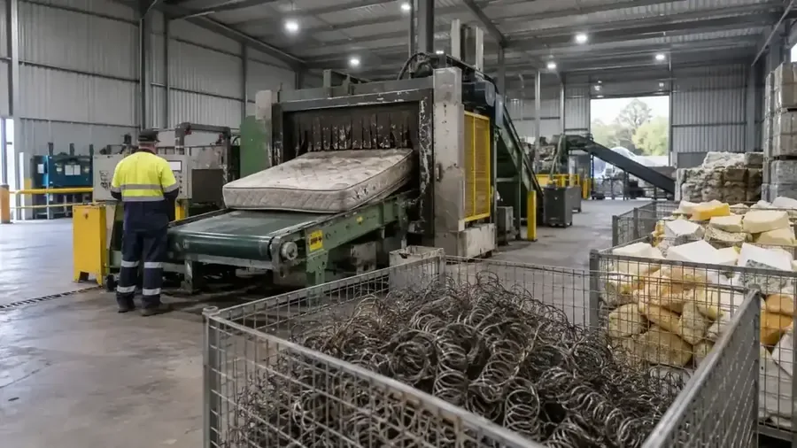
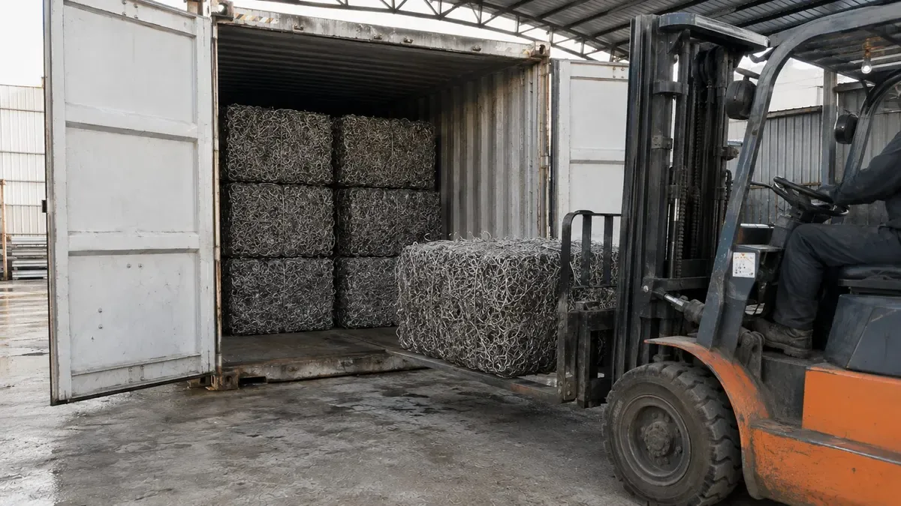
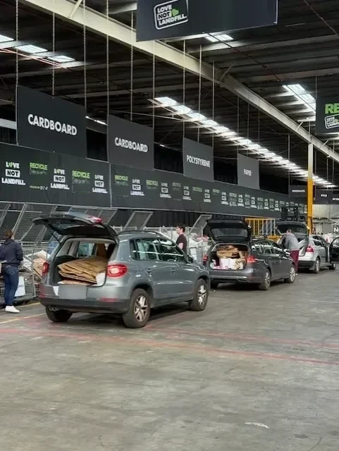
04 What runs here today

Eco Plastics
Rigid plastics from NSW, Victoria, the ACT and South Australia, stripped, shredded and washed into clean flake in Geelong. Pallet wrap is baled for film recyclers.
Also on site
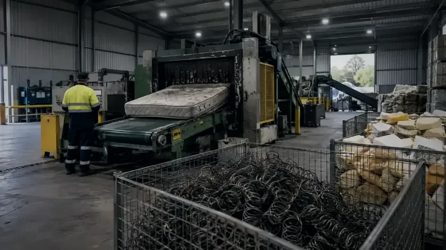
Twin-shaft shredders that can process up to 1,400 m³ of product a day.
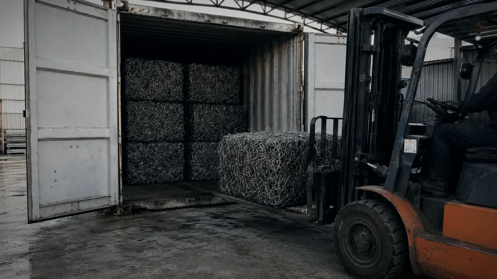
Cardboard is baled on site, and export runs in shipping containers from the site.
Australia’s largest polystyrene plant, on the same site.
04 Safety and compliance
eCheck is the group’s own safety, training and compliance app, in use on site.

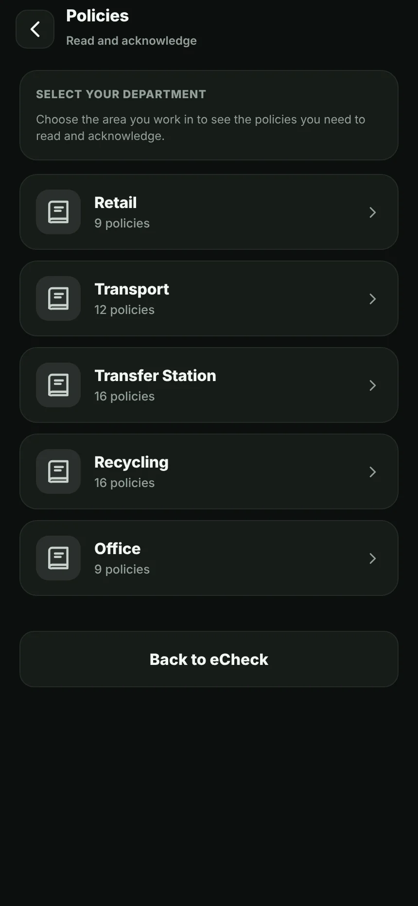

Screens from eCheck, October 2026.
04 The group behind it
01
JUNK
Trash.
02
Recycle Group, Geelong
The Mattress Recycling Company
Global Steel
Eco Plastics
03
Recycle Warehouse
04
Nunjara
LG Recycling (opening)
04 Talk to us